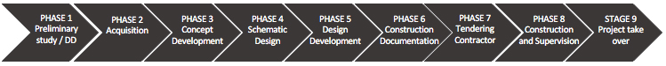

At Beaufort Development we are driven to deliver outstanding quality to our valued clients and partners. Beaufort Development capabilities cover the full life cycle of development utilizing the collective knowledge and various resources of our seasoned senior executive leadership.
From initial concept and positioning, through the various design stages until project completion, Beaufort Development can provide continuous and consistent control, supervision and assured execution, in accordance with our proven and tested development process. Our methodology always considers the financial viability of a project whereby we continuously update and test design and cost against set project objectives, movements in market variables and funding strategy. The approach is one of partnership in a common objective, with our clients.
Beaufort Development will oversee the entire development of a project, including negotiating contracts for final design and construction, monitoring compliance with all contracts, producing and overseeing work schedules, and monitoring construction draws.
Beaufort Development core competencies includes.
- Oversee the entire development of a project, including design management, development management, commercial management, project management, risk management and procurement within appropriately project specific governance framework.
- Act as a strategic development advisor to an owner or project at specific areas throughout the development cycle
Development Gateway Process & Development Cycle:
Beaufort methodology is based on a clear and concise development process aimed at appropriately manage development risk in function of the three key development variables Quality, Cost and Time. This framework ensures that informed commercial decisions are made in function of up to date project financial feasibility studies at the end of each phase.
It is recognized that in order to execute the full development lifecycle, numerous design specialist, consultants and contractors will be required to be engaged for the project. Beaufort Development will ensure competent and qualified appointments, co-ordination and effective assignment on appropriate commercial terms and in accordance with best market practice and international standards. Beaufort Development will manage and supervise the selection, negotiation and recommend for the appointment of lead consultancy teams based on effective award strategies on behalf of investor clients.
In any complex Development such as large scale Hospitality Assets the development life cycle process addresses the required consultants on various levels.
Beaufort Development: Pre-Concept Scope
- Master Planning
- Stakeholder Requirements
- Financial Parameters & Objectives
- Tourism Strategy
- Best Use Studies
- Market & Feasibly Studies
- Concept Architect Selection
- Commercial and Financial Team Appointment
- Financing and Investor Appraisal
- Debt Structuring and Negotiation
Beaufort Development: Concept Execution Scope
- Master Planning
- Phasing and Subdivision
- Phasing and Subdivision
- Architect(s) Selection
- Designer(s) Briefs and Selection
- Lead Contractor(s) Qualification & Shortlist
- Project Manager Appointment
- Engineer Of Record Appointment
- Commercial Contract Manager Appointment
Beaufort Development: Specialist Prequalification and Appointment Scope
- Environmental and Sustainability Consultant
- Security Consultan
- Fire Life Safety Consultant
- Structural Engineer
- Civil & Infrastructure Engineer
- MEP HVAC Consultants
- Acoustic Engineer
- Information Technology, Communications and Security Design (ELV Systems)
- Food and Beverage – Concept, Enabling & Technical Designer
- Vertical Transportation
- Lighting Designer Internal / External
- Landscape Soft and Hard, Pool and Water
- Branding, Graphics, Signage & Wayfinding Designer
- Kitchen and Laundry Consultant
- Acoustic Engineer
- Spa Operational Consultant
- Activities and Experiences Consultant
- EIA Consultant
- Traffic and Logistics Consultant
- AV & PA Design Consultant
- FF&E; and OS&E; Procurement Agen